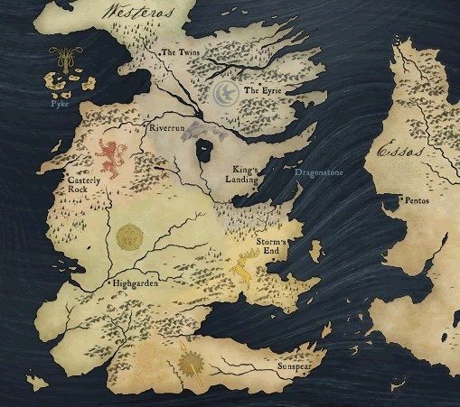
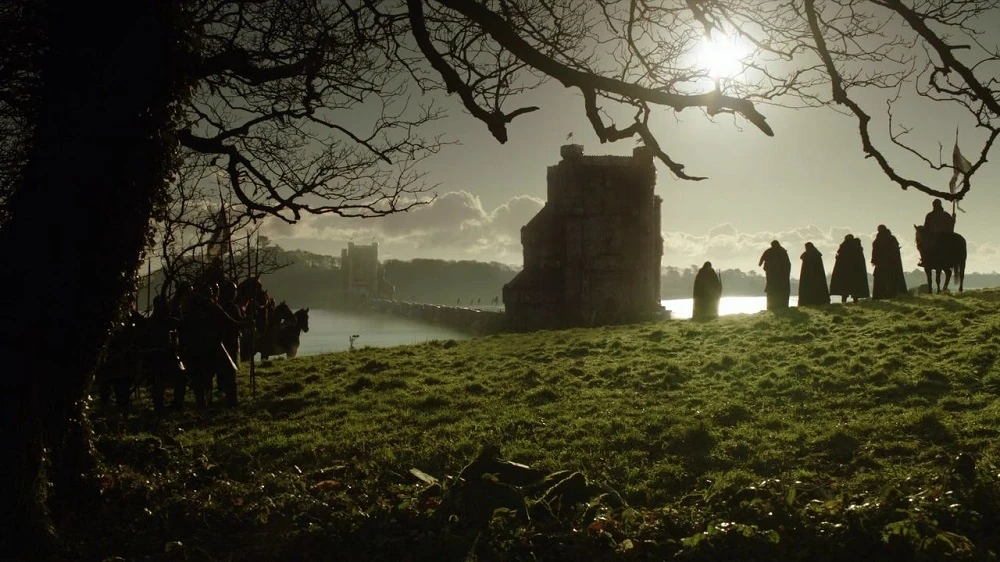
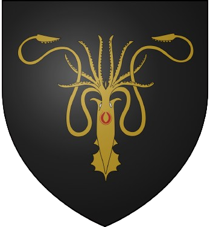
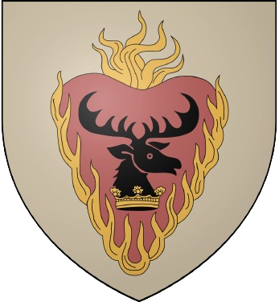
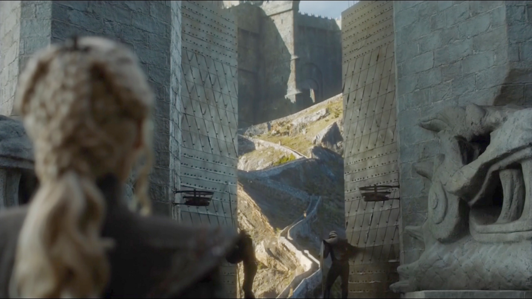
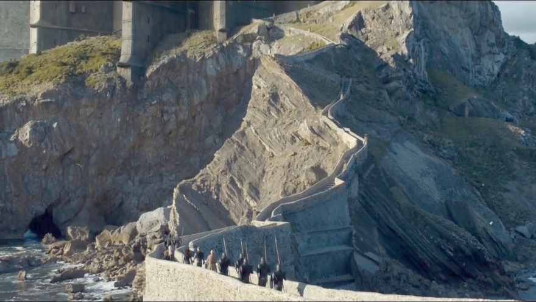
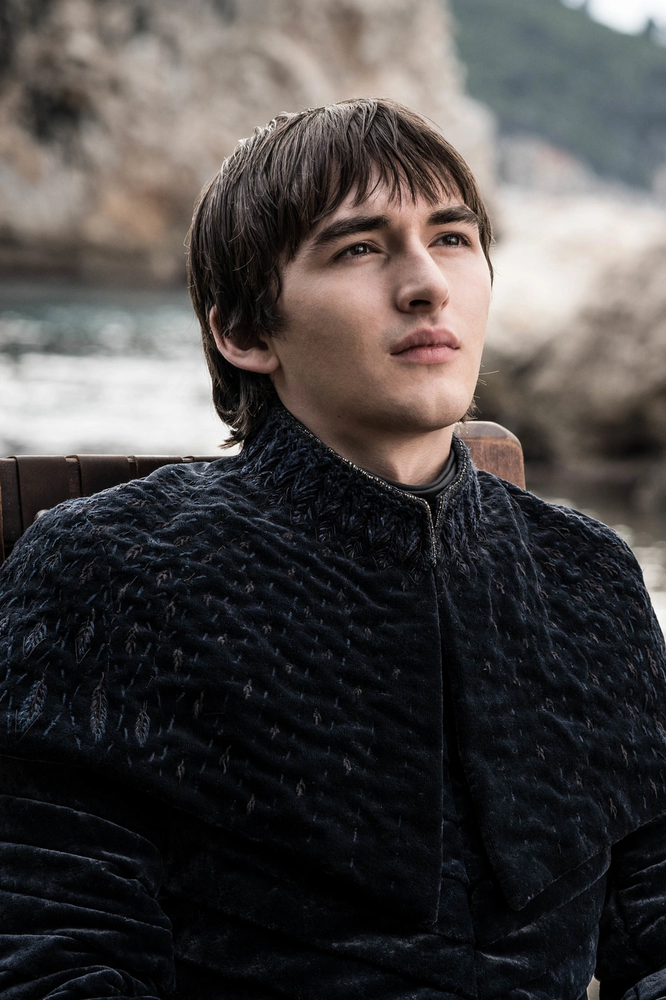
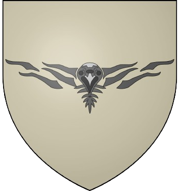
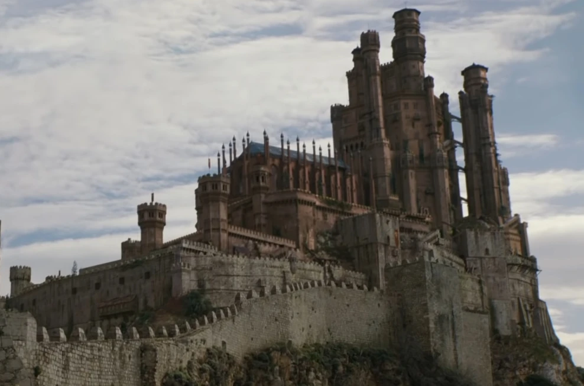
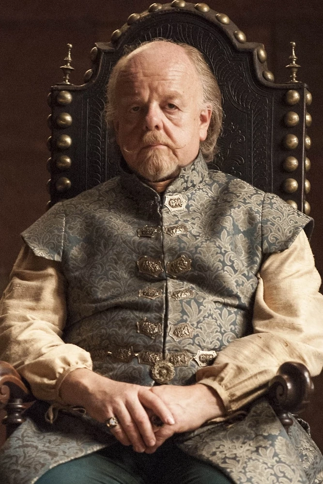

Westeros est un continent ayant environ la taille de l'Amérique du Sud dont les différentes régions ont été
unifiées depuis la Conquête des Targaryen il y a
environ trois cent ans avant le début de la saga.
La région nord du continent fait à elle seule à peu près la même taille que toutes
les autres régions réunies, mais est bien moins densément peuplée.
George R.R. Martin estime que Westeros était peuplé en l'an 300 d'environ vingt millions d'habitants.
Les Ouestriens, nom collectif donné aux habitants de Westeros et plus particulièrement à ceux des Sept
Couronnes, sont issus du mélange des lignées des Premiers Hommes et des Andals dans des proportions
variables selon les régions.
On trouve aussi dans une moindre mesure l'influence du sang du Rhoynar, surtout à Dorne, et de manière plus
anecdotique du sang valyrien des quelques lignées ayant survécu au Fléau de Valyria.
Malgré l'unification du royaume, les Ouestriens ne forment pas un peuple complètement homogène et de
nombreuses sous-cultures cohabitent.
Toutefois, ils parlent tous la Langue Commune, ou ouestrien, qui a supplanté partout la Vieille Langue des
Premiers Hommes.
Les religions pratiquées dans le royaume sont essentiellement celle des Sept, la Foi, importée par les
Andals, et, dans une moindre mesure, celle des anciens dieux des Premiers Hommes et des enfants de la forêt,
ainsi que la religion du dieu Noyé qui est particulière aux îles de Fer.
Le royaume des Sept Couronnes se distingue par une société féodale placée sous la suzeraineté du roi des
Sept Couronnes qui siège sur le Trône de Fer d'Aegon Ier Targaryen.
Une vaste échelle de vassalité part du pouvoir royal aux différents seigneurs suzerains et à leurs
différents vassaux, jusqu'au peuple roturier.

Le Conflans
Le Conflans, domaine de la Maison Tully , est une
région de Westeros bordée par le Neck au nord, par le Val
d'Arryn et les Terres de la Couronne à l'est, par le
Bief au sud et les Terres de l'Ouest à l'ouest.
C'est une région fertile traversée par de nombreux cours d'eau.
Les bâtards y sont nommés Rivers.
Vivesaigues
Demeure de la Maison Tully , est un château situé
aux confluents de la Ruffurque et de la Culbute.
C'est une place triangulaire difficile à prendre car deux de ses côtés sont bordés par les deux fleuves
et le troisième peut être inondé en cas de siège, faisant du château une île.
Liste des seigneurs de Vivesaigues
Photo
Nom
Blason
Maison
Titres
Règne
Edmure Tully
Tully
Seigneur de Vivesaigues et Défenseur du Trident
299-300
Walder Frey, l'Attardé
Frey
Seigneur du Pont, Seigneur de Vivesaigues et Défenseur du Trident
300-303
Brynden Tully, le Silure
Tully
Seigneur de Vivesaigues
303
Edmure Tully
Tully
Seigneur de Vivesaigues et Défenseur du Trident
304-...
Vivesaigues lors du générique
Vue de loin de Vivesaigues
Vue sur l'eau de Vivesaigues
Vue de l'entrée de Vivesaigues
Entrée de Vivesaigues
Intérieur de Vivesaigues
Jardin de Vivesaigues
Les Jumeaux
Siège de la Maison Frey ,
forment une forteresse
constituée de deux donjons, situé chacun sur une rive de la Verfurque et reliés entre eux par un pont au
centre duquel se tient une tour fortifiée.
Les Jumeaux lors du générique
Vue au loin des Jumeaux

Vue des Jumeaux
Tour ouest
Tour est
Grande salle
Harrenhal
Plus grande forteresse des Sept Couronnes, ce château aux dimensions colossales a la réputation d'être
maudit car plusieurs maisons nobles l'ont successivement occupé mais toutes ont connu un destin funeste.
Harrenhal est, à l'époque de la saga, dans un état de délabrement avancé et seule une petite partie de
la forteresse est utilisée par ses occupants.
Après la Bataille de la Néra, Littlefinger en
devient le seigneur nominal.
Harrenhal lors du générique
Extérieur de Harrenhal
Tours de Harrenhal
Le Val D'Arryn
Le Val d'Arryn, domaine de la Maison Arryn , est une
région montagneuse bordée par le Conflans à l'ouest et les Terres de la Couronne au sud.
La présence dans cette région de clans montagnards ne se soumettant pas à l'autorité royale rend les voyages
dangereux.
Les bâtards y sont nommés Stone.
Les Eyrie
La demeure de la Maison Arryn est une forteresse
réputée imprenable car elle est située au sommet d'une haute montagne et n'est accessible que par un
étroit sentier se terminant par une cheminée naturelle, où ont été creusées des marches, ou par des
nacelles hissées par des treuils.
Liste des seigneurs des Eyrié
Photo
Nom
Blason
Maison
Titres
Règne
Jon Arryn
Arryn
Seigneur des Eyrié, Défenseur du Val, Gouverneur de l'Est et Main du Roi
???-298
Robin Arryn
Arryn
Seigneur des Eyrié, Défenseur du Val et Gouverneur de l'Est
298-...
Les Eyrié lors du générique
Extérieur des Eyrié
Cellules célestes
Grande salle du château des Eyrié
Porte de la Lune
Les Iles de Fer
Domaine de la Maison Greyjoy , elles sont un
archipel de sept îles situées au large du Conflans, sur la côte ouest de Westeros.
Elles doivent leur nom à la présence de nombreuses mines de fer.
Ces îles ont un sol pauvre et rocailleux et leurs habitants, les Fer-nés, vivent principalement de la pêche
et du pillage de terres plus fertiles.
Les bâtards y sont nommés Pyke.
Pyk
Siège de la Maison Greyjoy .
C'est une forteresse constituée de plusieurs tours bâties sur trois îles principales à l'extrémité d'une
péninsule rocailleuse.
Liste des seigneurs des îles de Fer
Photo
Nom
Blason
Maison
Titres
Règne
Balon Geyjoy
Greyjoy
Seigneur des îles de Fer, Roi des îles de Fer et du Nord, Roi du Sel et du Roc, Fils du
Vent
de Mer et Seigneur Faucheur de Pyk
???-303
Euron Greyjoy

Greyjoy
Seigneur Ravage de Pyk, Roi des îles de Fer, Roi du Sel et du Roc et Fils du Vent de Mer
303-305
Yara Greyjoy
Greyjoy
Reine des îles de Fer, Reine du Sel et du Roc, Fille du Vent de Mer et Lady Ravage de
Pyk
Île volcanique située dans la baie de la Néra qui est la demeure ancestrale de la Maison Targaryen .
La citadelle homonyme, dont l'architecture est dédiée aux dragons, appartient au début de la saga à
Stannis Baratheon 
Liste des seigneurs de Peyredragon
Photo
Nom
Blason
Maison
Titres
Règne
Stannis Baratheon
Baratheon
Seigneur de Peyredragon
282-302
Daenerys Targaryen, née du Typhon, Mère des Dragons, l'imbrûlée, Briseuse de Chaînes
Targaryen
Khaleesi de la Grande Mer Herbeuse, Reine de Meereen, Dame de Peyredragon, Reine des
Andals,
de Rhoynar et des Premiers Hommes et Protectrice du Royaume
302-304
Peyredragon lors du générique
Extérieur de Peyredragon
Dragons au-dessus de Peyredragon

Porte d'entrée de Peyredragon

Escalier de Peyredragon
Salle du trône de Peyredragon
Trône de Peyredragon
Table carte de Peyredragon
Port-Real
La capitale, ainsi que la ville la plus peuplée (environ cinq cent mille habitants), des Sept Couronnes.
Située à l'embouchure de la Néra, la ville est entourée de remparts et est en partie bâtie sur trois
collines.
Rois des 7 Couronnes
Photo
Nom
Surnom
Règne
Blason
Maison
Aerys II
Le Roi Fou
259-281
Targaryen
Robert I
L'Usurpateur
281-298
Baratheon
Joffrey I
298-300
Baratheon
Tommen I
300-303
Baratheon
Cersei I
La Lionne
303-305
Lannister
Daenerys I
La Mère des Dragons
305 (quelques heures)
Targaryen

Brandon I
Le Rompu
305-...

Stark
Port-Réal lors du générique
Vue de Port-Réal et du Donjon Rouge
Vue extérieure de Port-Réal
Vue du dessus de Port-Réal
Septuaire de Baelor
Vue du Donjon Rouge de la mer

Extérieur du Donjon Rouge
Entrée du Donjon Rouge
Salle du trône de fer
Trône de fer
Carte de Westeros dans une cour du Donjon Rouge
Jardins royaux
Crâne des dragons dans la cave du Donjon Rouge
Les Terres de l Ouest
Domaine de la Maison Lannister , sont bordées par
le Conflans à l'est et par le Bief au sud.
Ce sont des terres montagneuses riches en minerais et notamment en gisements d'or.
Les bâtards y sont nommés Hill.
Castral Roc
Siège de la Maison Lannister et est réputée
pour être l'une des plus puissantes forteresses de Westeros.
George R. R. Martin s'est inspiré du rocher de Gibraltar pour la créer.
Liste des seigneurs de Castral Roc
Photo
Nom
Blason
Maison
Titres
Règne
Tywin Lannister, le Vieux Lion
Lannister
Seigneur de Castral roc, Gouverneur de l'Ouest, Main du Roi, Sauveur de la Ville
(Port-Réal)
et Protecteur du Royaume
260-301
Cersei Lannister, la Lionne
Lannister
Reine Mère, Reine Régente, Reine Consort, Dame de Castral Roc, Gouverneure de l'ouest,
Défenseurs des Terres de l'Ouest, Reine des Andals et des Premiers Hommes et Protectrice
du
Royaume
301-305
Tyrion Lannister, le petit Lion
Lannister
Grand Argentier, Main du Roi (Joffrey Ier), Main de la Reine, Gouverneur de l'Ouest,
Défenseur des Terres de l'Ouest et Main du Roi (Bran Ier)
305-...
Extérieur de Castral-Roc
Remparts lors du siège de Castral-Roc
Les Terres de l Orage
Domaine de la Maison Baratheon , elles sont
bordées par les Terres de la Couronne au nord, le Bief à
l'ouest, et Dorne au sud.
La région comporte de nombreuses terres boisées ou montagneuses.
Les bâtards y sont nommés Storm.
Accalmie
Siège de la Maison Baratheon , est une
puissante forteresse située au bord de la mer et construite de façon à résister à ses assauts.
Souvent assiégée, cette place-forte n'est jamais tombée.
Liste des seigneurs d'Accalmie
Photo
Nom
Blason
Maison
Titres
Règne
Robert Baratheon, l'Usurpateur
Baratheon
Seigneur d'Accalmie, Roi des Andals et des Premiers Hommes, Suzerain des Sept Couronnes
et
Protecteur du Royaume
278-282
Renly Baratheon
Baratheon
Seigneur d'Accalmie
282-299
Joffrey Baratheon
Baratheon
Roi des Andals et des Premiers Hommes, Seigneur des Sept Couronnes, Protecteur du
Royaume et
Seigneur d'Accalmie
299-301
Tommen Baratheon
Baratheon
Roi des Andals, de Rhoynar et des Premiers Hommes, Seigneur des Sept Couronnes et
Seigneur
d'Accalmie
301-303
Gendry Baratheon
Baratheon
Seigneur d'Accalmie et Défenseur des Terres de l'Orage
305-...
Extérieur d'Accalmie dans la série House of the Dragon
Salle du trône d'Accalmie dans la série House of the Dragon
Le Bief
Domaine de la Maison Tyrell ,
est la région couvrant
le sud-ouest de Westeros.
La région est couverte de plaines agricoles très fertiles.
Les bâtards y sont nommés Flowers.
Hautjardin
Siège de la Maison Tyrell , est située sur les
rives de la Mander.
Liste des seigneurs de Hautjardin
Photo
Nom
Blason
Maison
Titres
Règne

Mace Tyrell, la Fleur de Suif
Tyrell
Seigneur de Hautjardin, Gouverneur du Sud, Maître des Navires et Grand Argentier
???-303
Olenna Tyrell, née Redwyne, la Reine des Epines
Tyrell
Dame de Hautjardin et Gouverneure du Sud
303-304
Bronn de la Néra
Maison de Bronn
Commandant du Guet de Port-Réal, Seigneur de Hautjardin, Gouverneur du Sud, Grand
Argentier
et Défenseur du Bief
305-...
Extérieur de Hautjardin
Arrivée des Lannister à Hautjardin
Villevieille
Deuxième plus grande ville de Westeros après Port-Réal.
Siège de la Maison Hightower , elle est située
à l'embouchure de l'Hydromel et c'est un important port de commerce.
La ville abrite également la Citadelle des Mestres.
La Grand-Tour de Villevieille est un phare qui mesure plus de deux cent mètres de hauteur et est
l'édifice le plus haut de Westeros.
Extérieur de Villevieille
Bibliothéque de la Citadelle
Toilettes de la Citadelle
Dorne
La péninsule de Dorne, domaine de la Maison Martell , se situe au sud-est de Westeros.
Les parties frontalières avec le Bief et les Terres de
l'Orage sont montagneuses et toutes les autres assez désertiques.
C'est la région la moins peuplée de Westeros et la dernière à avoir été rattachée aux Sept Couronnes.
Les bâtards y sont nommés Sand.
Lancehelion
Demeure de la Maison Martell , est située à la
pointe sud-est de la péninsule de Dorne, et donc du continent.
 il y a
environ trois cent ans avant le début de la saga.
il y a
environ trois cent ans avant le début de la saga.

 , est une
région montagneuse bordée par
, est une
région montagneuse bordée par  , elles sont un
archipel de sept îles situées au large du
, elles sont un
archipel de sept îles situées au large du